UFO crash site
A custom wreck with green light, fire, a smoke column, crackling electrical sparks, mist, distant crash audio, and a toxic gas cloud that demands NBC gear.
Signal acquired / Chernarus sector
Investigate burning UFO wrecks, survive hostile little green men, and recover technology that was never meant to reach Earth.
Version 2.0.0 for DayZ 1.30. A DayZ mod by Geb.
Mission briefing
A UFO crash event that works exactly like DayZ's vanilla helicopter crashes: the wreck is even built on the same CrashBase class. The difference: the site is wrapped in a toxic cloud, alien technology lies in the wreckage, and when survivors close in, 10–15 hostile aliens crawl out to meet them. Vanilla heli crashes are untouched and keep running alongside it.
A custom wreck with green light, fire, a smoke column, crackling electrical sparks, mist, distant crash audio, and a toxic gas cloud that demands NBC gear.
Little Green Men with their own voices and footsteps. Up close they claw like infected; in the open they hit you with a psychic zap from up to 80 m.
Salvage the Montauk Rifle, plasma cartridges and plasma grenades from the wreck. Cells come in green, blue, lime and violet, and every colour hits aliens twice as hard as earthly bullets.
Cartridges can't be unloaded: combine one with a 9V battery to recharge it. A full battery fills a full cartridge, and a cell cleared from the rifle's chamber loads back in.
It works. Aliens lose track of anyone wearing an intact foil hat unless they're within arm's reach, and their psychic zaps can't get through.
Skin an alien for Area 51 Steaks and a Roswell Hide. Cooked steak gives 90 seconds of green night vision; the hide tans into green leather for backpacks and bags.
Every number, from alien counts and loot odds to the gas zone, zap range and damage bonuses, lives in $profile:Gebs/alieninvasion.json.
The server writes ready-made types, events, crash positions and loot points into $profile:Gebs/mpmissions/ on first start.
Contact sequence
Think of it as a helicopter crash from another world: the Central Economy places the wreck exactly like a vanilla heli crash event, and the wreck then runs the encounter: effects, audio, toxic gas, salvage and its own alien spawns.
geb_Aliencrash enters the world through the Central Economy and plays the distant crash sound for everyone in range.
Clients attach green illumination, fire, a smoke column, sparks and ground mist to the crash object.
An 8 m gas zone settles over the wreck. It uses DayZ's own contaminated-area rules, so NBC gear protects you. It disappears with the wreck.
A 35% chance of a Montauk Rifle with a cartridge, up to two partly charged spare cartridges and up to two plasma grenades lie 3–8 m from the wreck.
When a survivor comes within 300 m, 10–15 Little Green Men appear 5–25 m from the wreck. Until then nothing runs, so idle crash sites cost the server nothing.
An alien chasing you with a clear line of sight zaps you from 4–80 m, at most once a minute each: a green beam from its head and a crackle where it hits. Up close they claw like infected. A foil hat blocks the zaps.
Skin dead aliens for Area 51 Steak and Roswell Hide. When the event ends and no one is within 1 km, the wreck, its gas cloud and any surviving aliens are cleaned up together.
Active wreck
Use this classname when you want the complete scripted event: audio, client effects, gas, salvage and alien spawning. On a dedicated server, spawning it with an admin tool runs the full encounter too (everything except the distant crash sound).
Visual prop
Use this for scenery or custom compositions. It displays the same wreck model without running the encounter script.
Recovered materials
Nineteen public classnames cover the encounter, toxic cloud, creature, specimen tank, weapon, magazine, loose cell, plasma grenade, clothing, food, the Roswell Hide, and what you can make from it.
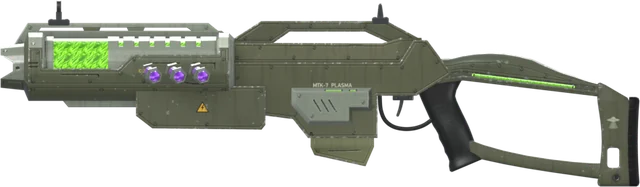
Weapon
A semi-automatic experimental rifle that fires plasma bolts in the loaded cell's colour. Plasma deals double damage to aliens; every other firearm deals 75%. Skeleton stock with a cheek rest, a shaped pistol grip, hooded iron sights with a glowing dot, a live read-out on the back, purple fluid swirling in the vent tubes, lime fluid flowing behind the glass windows, and electric arcs on the muzzle when it runs hot.
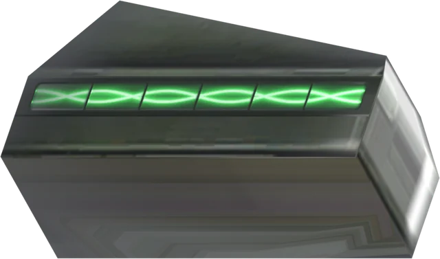
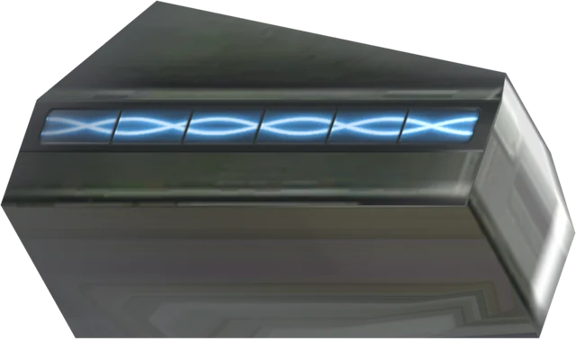
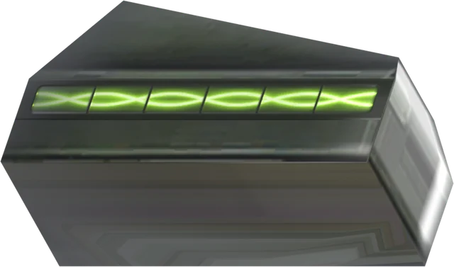
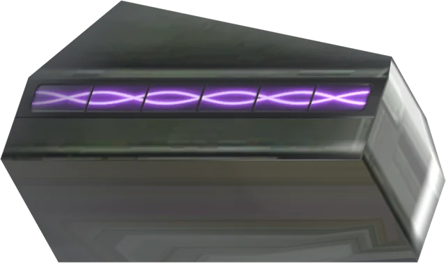
Magazine
A sealed plasma magazine that can't be unloaded. Combine it with a 9V battery to recharge: a full battery fills a full cartridge, a partial one adds what it can. Comes in four colours, each with its own muzzle effect and a cell window that glows in that colour: geb_PlasmaCartridge (green), _Arc (blue), _Lance (lime) and _Void (violet). A cell cleared from the rifle's chamber comes back as a loose Plasma Cell (Ammo_Plasma_Cell) that loads back into any cartridge and keeps its colour.
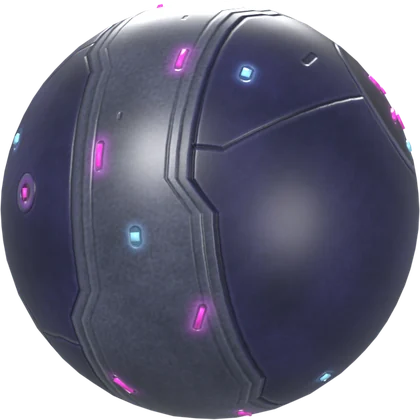
Explosive
A dark violet alloy ball with a steel band and glowing magenta and cyan lights, held like the M67. Prime it and throw it: it sticks to the first thing it touches, rides along on players, infected, animals and vehicles, and bursts 3 s after leaving your hand in a blue plasma blast. Smaller than the M67's blast but twice its damage, and whoever it's stuck to takes all of it. Until it leaves your hand you can disarm it again. Found at crash sites and sometimes on aliens.
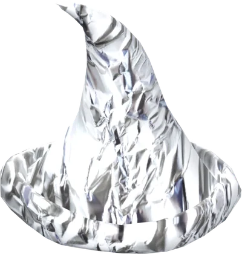
Clothing
Aliens can't track an intact foil hat's wearer beyond 3 m, so they can't zap you either. A light 3×2 hat, not a helmet.
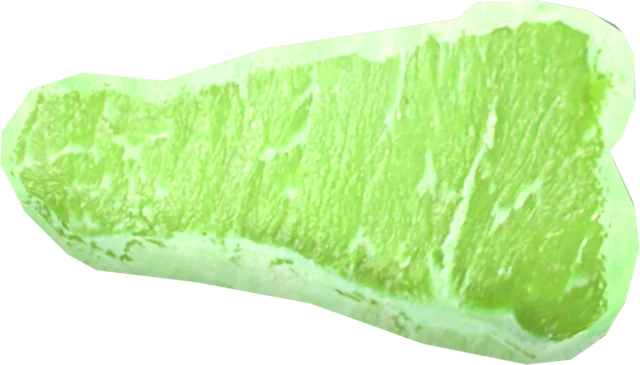
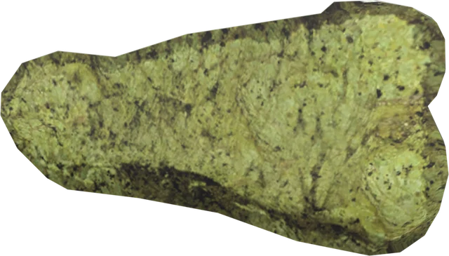
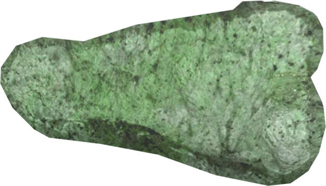
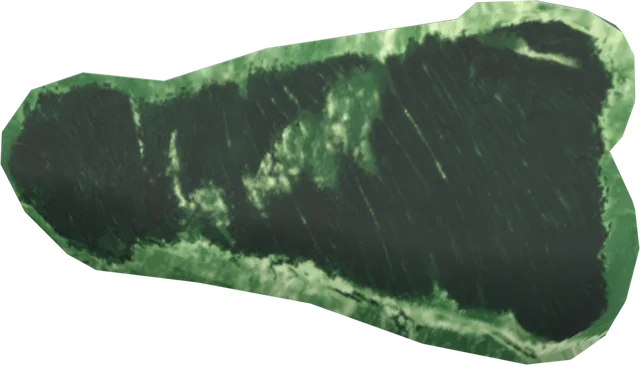
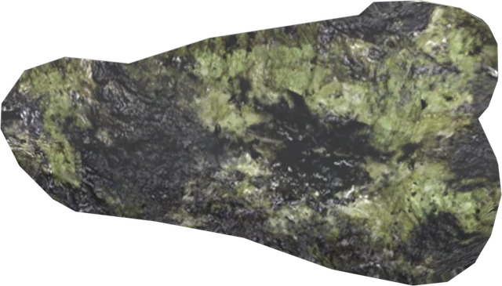
Food
Skinning an alien gives two steaks. Eat it cooked (baked, boiled or dried) for 90 seconds of green night vision; raw, burnt or rotten meat gives food poisoning.
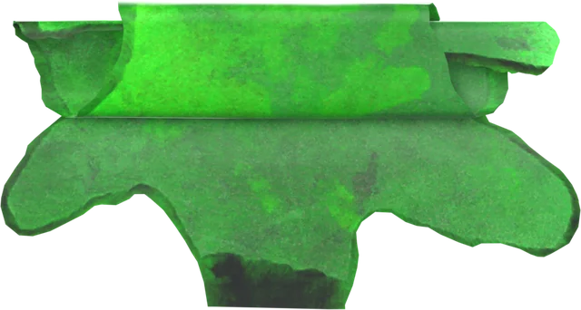
Material
Skinning an alien gives one. Tan it with garden lime into Roswell Leather, or tie it into a courier bag with a rope.
Creature
A hostile extraterrestrial with its own voice and footsteps, and green blood. Infected melee up close, a psychic zap at range, and a green burst and scream when it dies.
Prop
A sleeping alien floating in glowing green fluid, with rising bubbles, drifting motes, a green glow and a low hum. Decoration for labs and bunkers: place it with an admin tool or a map editor; nothing spawns it.
Crafting
Green versions of vanilla's leather chain, on vanilla's models. Recipes work like vanilla's: tan the hide in your hands or in a barrel with garden lime, sew with a leather sewing kit, and break items back down with any knife or blade.
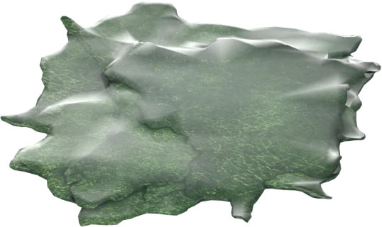
Material
A Roswell Hide tanned with garden lime, by hand or in a barrel. Up to 4 pieces by hand from a hide in pristine condition (fewer from a damaged one), 6 in a barrel.
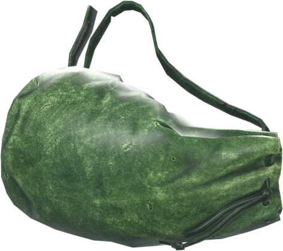
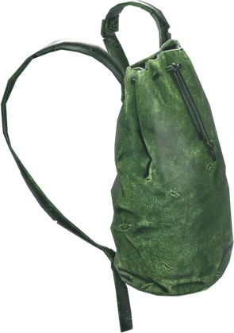
Backpack
Two Roswell Leather and a leather sewing kit. Holds as much as vanilla's leather backpack; cut it up to get one leather back.
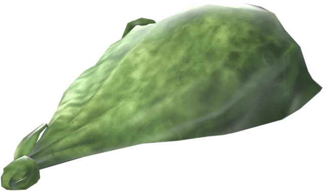
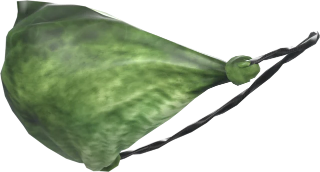
Backpack
A Roswell Hide and a rope. Breaking it down returns both.
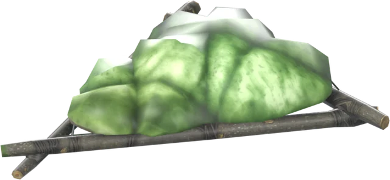
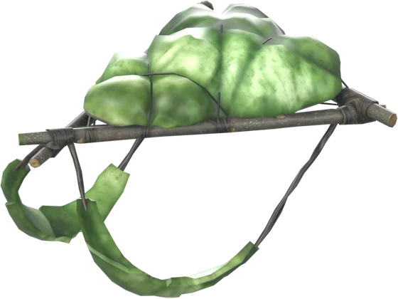
Backpack
A Roswell Hide courier bag lashed to a frame of three sticks. Breaking it down returns a stick and the hide.
Deployment protocol
Choose the player path for local use or the server path for a community server. The Workshop remains the authorized distribution source.
Visit Alien Invasion on Steam and select Subscribe.
Wait for the DayZ Workshop download to finish before starting the launcher.
The official DayZ launcher can resolve and load the server's required Workshop mods automatically.
Subscribe with the server's Steam account or retrieve Workshop item 2840597308 using your normal SteamCMD workflow.
Place the published mod folder beside the DayZ server executable. Copy its .bikey file into the server's keys directory.
Load the mod in your server startup command. Keep the actual installed folder name if it differs from the example.
-mod=@alieninvasionOn startup the mod writes its config and Central Economy files into the server profile folder (the one your -profiles= launch parameter points to), next to Gebsfish's files if you run it. They are only rewritten when the mod version changes, so your edits survive restarts.
<profile>/Gebs/
├── alieninvasion.json ← server settings (see Config)
└── mpmissions/
├── alieninvasion-types.xml
├── alieninvasion-spawnabletypes.xml
├── alieninvasion-events.xml
├── alieninvasion-cfgeconomycore.xml
├── alieninvasion-cfgeventspawns.xml
└── alieninvasion-mapgroupproto.xmlCopy the types, spawnabletypes and events files into a new alieninvasion folder inside your mission (mpmissions/dayzOffline.<map>/alieninvasion/), then paste the block from alieninvasion-cfgeconomycore.xml inside <economycore> in the mission's cfgeconomycore.xml. Your own types.xml and events.xml stay untouched.
Paste the StaticAlienCrash event from alieninvasion-cfgeventspawns.xml into cfgeventspawns.xml, and the geb_Aliencrash group from alieninvasion-mapgroupproto.xml into mapgroupproto.xml. On Chernarus you get 79 hand-picked crash sites; on any other map the generator borrows that mission's heli-crash positions.
Restart, check the script and RPT logs for [AlienInvasion] lines, then visit a crash: loot and gas are there immediately, aliens appear once you're within 300 m.
Download the plain-text server guide
Central Economy reference
If you have ever configured DayZ's StaticHeliCrash event, this is the identical pattern. The wreck is registered in types.xml, the event is defined in events.xml, and its positions live in cfgeventspawns.xml, exactly like a heli crash. The only difference is what happens on site: the UFO script handles the aliens, loot and gas itself. You never add alien spawns, infected events or territories for it.
Prefer to paste by hand, or with a hosting panel's economy editor? These are the same entries the generator writes. Stop the server and back up the mission folder before editing it.
Do not copy the old Steam tutorial's InfectedAlien event or its <secondary>InfectedAlien</secondary> line. The wreck script already creates 10–15 aliens around each UFO. Keeping the old secondary event can produce duplicate or excessive alien spawns.
db/types.xmlPaste this entry anywhere inside the file's existing <types> ... </types> element. Do not add a second root element. The generated file also registers every item, the meat and the hide.
<type name="geb_Aliencrash">
<nominal>0</nominal>
<lifetime>2100</lifetime>
<restock>0</restock>
<min>0</min>
<quantmin>-1</quantmin>
<quantmax>-1</quantmax>
<cost>100</cost>
<flags count_in_cargo="0" count_in_hoarder="0" count_in_map="1" count_in_player="0" crafted="0" deloot="0"/>
</type>db/events.xmlPaste this inside the existing <events> ... </events> element. nominal is the target number of active crashes; lower it if three encounters are too many for your server.
<event name="StaticAlienCrash">
<nominal>3</nominal>
<min>0</min>
<max>0</max>
<lifetime>2100</lifetime>
<restock>0</restock>
<saferadius>1000</saferadius>
<distanceradius>1000</distanceradius>
<cleanupradius>1000</cleanupradius>
<flags deletable="1" init_random="0" remove_damaged="0"/>
<position>fixed</position>
<limit>child</limit>
<active>1</active>
<children>
<child lootmax="15" lootmin="10" max="3" min="1" type="geb_Aliencrash"/>
</children>
</event>cfgeventspawns.xmlPaste the event inside <eventposdef>. The generated file already contains real positions; if you write it by hand, replace every example coordinate with a safe, open location from your map. Add as many <pos> lines as you want; x and z are map coordinates and a is rotation.
<event name="StaticAlienCrash">
<zone smin="1" smax="3" dmin="3" dmax="5" r="45"/>
<!-- Replace these examples with coordinates for your map. -->
<pos x="7500.0" z="7500.0" a="0.0"/>
<pos x="8000.0" z="7200.0" a="90.0"/>
</event>mapgroupproto.xmlThe event asks for 10–15 loot items at each wreck, and the Central Economy can only place them where the wreck's group defines points. Paste the generated geb_Aliencrash group inside <prototype>. It uses vanilla Military usage (heli-crash loot); its comment explains how to switch to a custom UFO usage instead.
Check that each classname and event name matches exactly, validate the XML files, and restart the server. Watch the server RPT and script logs for XML or CE errors. To test quickly, spawn geb_Aliencrash with an admin tool on a dedicated server (it runs the full encounter too), or temporarily set nominal to 1.
What each file does: types.xml registers the spawnable objects, events.xml controls the dynamic event, cfgeventspawns.xml supplies its possible positions, and mapgroupproto.xml gives the wreck its loot points. Based on the original Alien Invasion tutorial, updated for the current scripted encounter. See Bohemia's Central Economy reference for the underlying file format.
Use a Steam Collection to distribute the required mod to your players.
Server tuning
Created on first start at $profile:Gebs/alieninvasion.json, beside Gebsfish's configs. Every value is used on the server only, so nothing needs to be sent to players. Edit it with the server stopped; changes apply on the next start.
| Setting | Default | What it does |
|---|---|---|
CrashAliensMin / CrashAliensMax | 10 / 15 | How many aliens each wreck spawns. |
CrashAliensSpawnDistance | 300 | Metres a player must come within before a wreck's aliens appear. 0 spawns them as soon as the UFO crashes. |
CrashRifleChance | 0.35 | Chance (0–1) a Montauk Rifle with a cartridge lies in the wreckage. |
CrashSpareCartridgesMax | 2 | Up to this many partly charged spare cartridges per wreck. |
CrashPlasmaGrenadesMax | 2 | Up to this many plasma grenades per wreck. |
CrashGasZone | true | Surround each wreck with an 8 m toxic cloud (NBC gear protects). |
PsychicZapEnabled | true | Aliens zap the player they're chasing from mid range. |
PsychicZapMinRange / PsychicZapRange | 4 / 80 | Distance band in metres for the zap. Closer than the minimum they use melee. Needs a clear line of sight. |
PsychicZapCooldown | 60 | Seconds between zaps from the same alien. |
PlasmaDamageVsAliens | 2.0 | Damage multiplier for plasma bolts against aliens. |
OtherFirearmDamageVsAliens | 0.75 | Damage multiplier for every other firearm against aliens. |
FoilHatDetectRange | 3 | Aliens can't target a foil hat's wearer beyond this many metres. |
AlienVisionSeconds | 90 | Night vision from eating cooked alien meat. |
BadMeatPoison | 100 | Food-poisoning agents per bite of raw, burnt or rotten alien meat. |
Safe to edit
A broken file is never overwritten: the server logs the error and uses defaults for that session. The file is only rewritten on a mod update, which adds any new settings without touching yours. Out-of-range values are clamped (minimum never above maximum, chances 0–1).
Plain-language notes
The JSON includes …Info lines explaining each group of settings, so you can tune it without this page open.
Reference
All public classes, for spawning, trader lists and loot tables. Click a name to copy it.
| Classname | Type | Description |
|---|
No classnames match that search.
Troubleshooting
No. Alien Invasion adds its own separate event that behaves like a heli crash (same dynamic-event system, same setup files) but with its own UFO wreck class and sound set. Vanilla crash events keep running untouched.
The wreck spawns them itself. Once a player comes within 300 m (CrashAliensSpawnDistance), the wreck places 10–15 aliens at random positions 5–25 m around it, and removes any survivors when it despawns. Do not add infected events, zombie territories or any alien spawn configuration: that would only create duplicates.
StaticObj_geb_Aliencrash is visual scenery only. Use geb_Aliencrash, through the Central Economy or with an admin tool on a dedicated server, for the scripted encounter.
A psychic zap: an alien chasing you, with a clear line of sight, hits you from 4–80 m, at most once a minute each: a green beam from the alien's head and a crackle where it lands. Break line of sight, close the distance, or wear a tin foil hat, which blocks the zaps completely. Server owners can tune or disable it in alieninvasion.json.
Yes. It's DayZ's own contaminated-area effect, so a gas mask and NBC suit protect you. The salvage lies inside it. Server owners can turn it off with CrashGasZone.
Combine a cartridge with a charged 9V battery (drag one onto the other, or hold one and use the action on the other). A full battery refills a whole cartridge; a partial one adds as many cells as its charge covers.
Yes. It contains custom models, textures, sounds, particles, scripts and localization, so it must run on the server and all clients.
No third-party mod is declared as a runtime dependency in the source.
The server writes them on first start into $profile:Gebs/mpmissions/ (see Setup). The mod never edits your mission folder itself: you copy the files in, so your own balance stays yours.
The file is read when the server starts, so restart after editing. If the server log shows [AlienInvasion] alieninvasion.json failed to load, the JSON has a syntax error (often a missing comma); the server runs on defaults until it's fixed, and your file is left untouched.
No. Subscribe to the authorized Workshop release and use a Steam Collection for your server's mod list.
Transmission log
What changed in each release. Server owners: 2.0.0 rewrites the generated economy files. Copy the new types file into your mission again and replace the geb_Aliencrash group in mapgroupproto.xml.
geb_PlasmaGrenade): an alien sticky grenade that clings to whatever it hits and bursts in a blue plasma blast 3 seconds after leaving the hand. Found at crash sites and sometimes on aliens.geb_AlienTank): a sleeping alien in a tank of glowing green fluid, with bubbles, motes, a green glow and a hum. A prop for admins and map makers.Ammo_Plasma_Cell): clearing a loaded rifle's chamber gives the cell back, and it loads into any cartridge. It never spawns as loot.geb_ prefix so other mods can't clash with them; new strings translated into all 13 languages.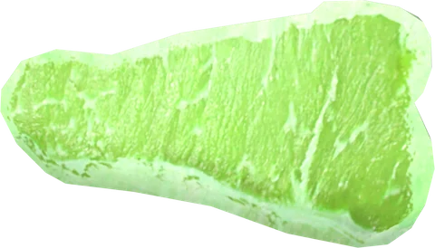
1.1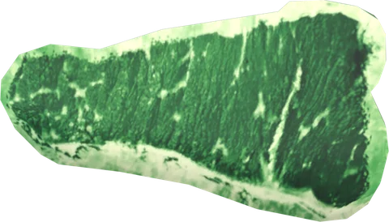
1.2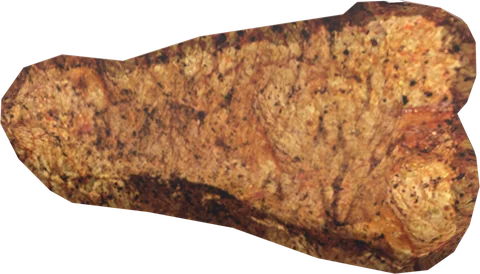
1.1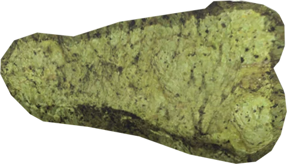
1.2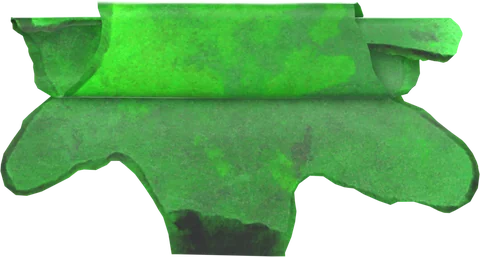
1.1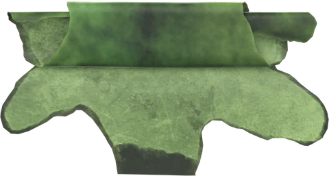
1.2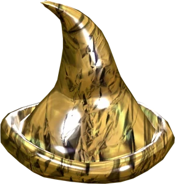
1.1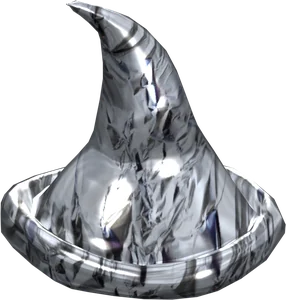
1.2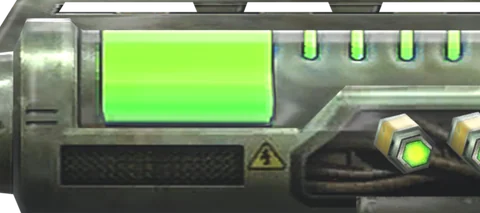
1.2$profile:Gebs/alieninvasion.json with every setting, and generated economy files in $profile:Gebs/mpmissions/.First release: the UFO crash event, Little Green Men, the Montauk Rifle and Cartridge, the tin foil hat, Area 51 Steak and Roswell Hide.